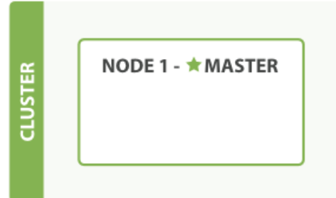

空集群
如果我们启动了一个单独的节点，里面不包含任何的数据和索引，那我们的集群看起来就是一个 Figure 1, “包含空内容节点的集群”。
Figure 1, “包含空内容节点的集群”

一个运行中的 Elasticsearch 实例称为一个节点，而集群是由一个或者多个拥有相同 cluster.name 配置的节点组成， 它们共同承担数据和负载的压力。 当有节点加入集群中或者从集群中移除节点时，集群将会重新平均分布所有的数据。
当一个节点被选举成为 主 节点时， 它将负责管理集群范围内的所有变更，例如增加、删除索引，或者增加、删除节点等。 而主节点并不需要涉及到文档级别的变更和搜索等操作，所以当集群只拥有一个主节点的情况下，即使流量的增加它也不会成为瓶颈。 任何节点都可以成为主节点。我们的示例集群就只有一个节点，所以它同时也成为了主节点。
作为用户，我们可以将请求发送到 集群中的任何节点 ，包括主节点。 每个节点都知道任意文档所处的位置， 并且能够将我们的请求直接转发到存储我们所需文档的节点。 无论我们将请求发送到哪个节点， 它都能负责从各个包含我们所需文档的节点收集回数据，并将最终结果返回給客户端。 Elasticsearch 对这一切的管理都是透明的。